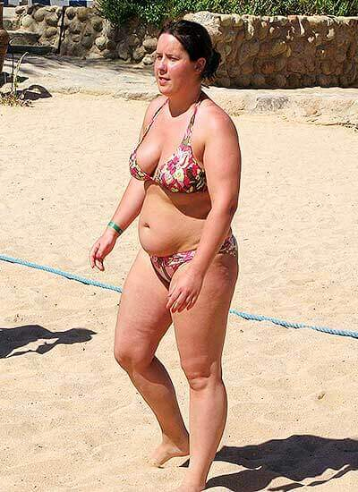
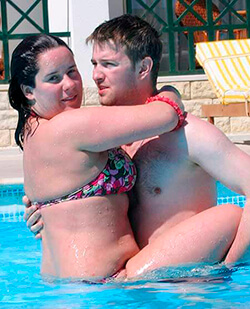
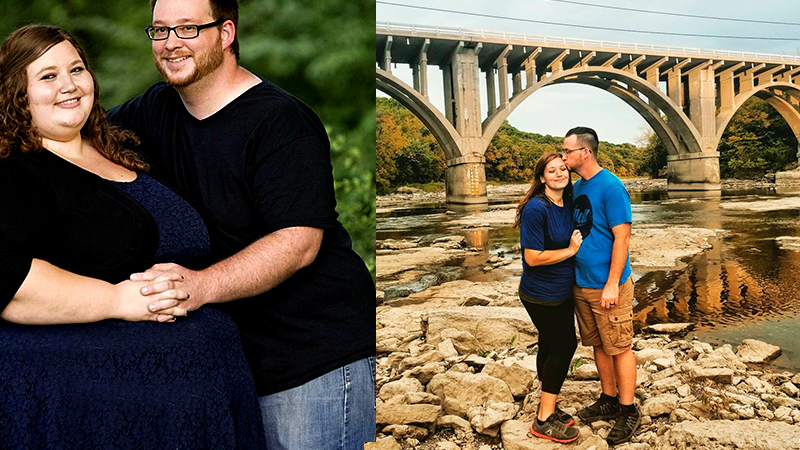
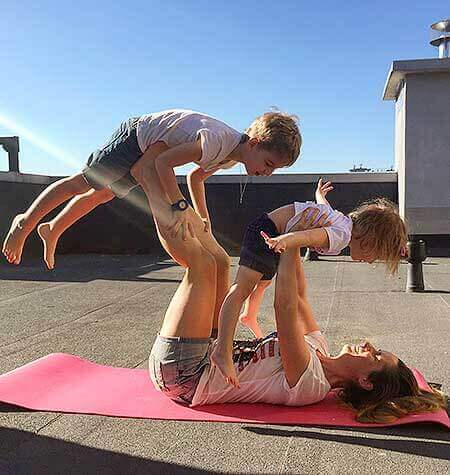
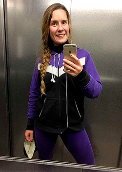
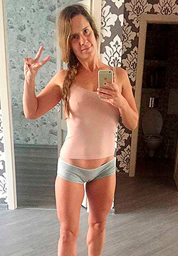
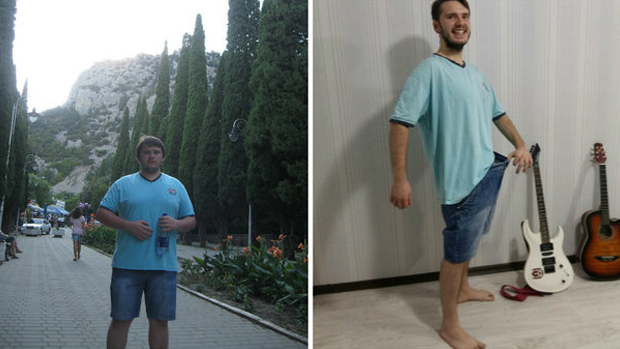
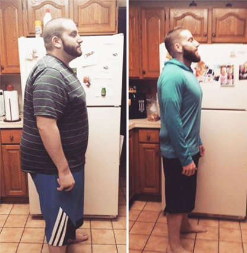
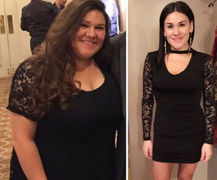
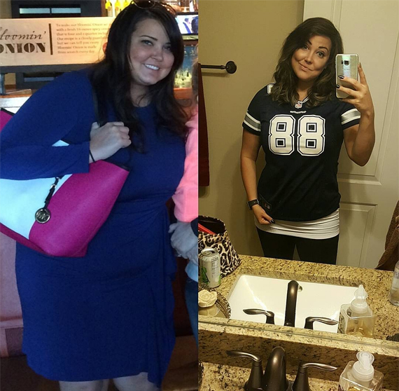

- 5 ΣΧΟΛΙΑ
- ΚΟΙΝΟΠΟΙΗΣΗ
- 5
λεπτομερής συνταγή
Έχεις κουραστεί με το επιπλέον βάρος; Δεν καταφέρνεις να χάσεις βάρος; Ή έχεις την τάση να ξανά παίρνεις κιλά όταν έχεις καταφέρει να τα χάσεις; Θέλεις να φορέσεις το αγαπημένο σου φόρεμα, αλλά δεν σου κάνει και το να αγοράσεις όμορφα ρούχα είναι ένα μεγάλο πρόβλημα για εσένα;

«Είμαι ευγνώμων σε εκείνους τους ανθρώπους που με αποκαλούσαν χοντρή και με περιφρονούσαν. Αν δεν ήταν αυτοί, θα ήμουν ακόμα παχιά» λέει η Άννα Θεοδώρου, που έχασε 26 κιλά Στο δρόμο προς ένα όμορφο σώμα δοκίμασε ένα σωρό διαφορετικές δίαιτες, αλλά η απλούστερη μέθοδος αποδείχθηκε η πιο αποτελεσματική. Η Άννα μιλάει αναλυτικά σχετικά με αυτή τη μέθοδο η οποία επίσης αποτρέπει την ανάκτηση του βάρους. Εδώ είναι η μαγική ιστορία της...
Δεν ήμουν ποτέ ένα εύθραυστο κορίτσι, αλλά το υπερβολικό βάρος δεν με έκανε να αισθάνομαι άνετα. Όταν γνώρισα τον Σπύρο, τον μελλοντικό σύζυγό μου, χαλάρωσα, και ταρακουνήθηκα μόνο όταν συνειδητοποίησα ότι ήμουν πραγματικά χοντρή.
Όταν γνώρισα τον Σπύρο, χαλάρωσα, και ταρακουνήθηκα μόνο όταν συνειδητοποίησα ότι ήμουν πραγματικά χοντρή.


Είμαι μαζί με το Σπύρο για περισσότερα από 7 χρόνια, και έχουμε δύο όμορφα παιδιά. Αλλά μέχρι πρόσφατα ήμασταν «και μαζί και μόνοι», όπως λέγεται. Ο Σπύρος ζούσε στο διαμέρισμά του, δούλευε πολύ και με επισκεπτόταν περιστασιακά. Και μετά έφευγε ξανά.
Από την αρχή της σχέσης μας περίμενα συνεχώς να μου κάνει πρόταση γάμου. Αυτό ήταν το όνειρό μου!
Πότε τελικά θα μου κάνει πρόταση; Αυτό ήταν το όνειρό μου!
Όταν έμεινα έγκυος για πρώτη φορά, θεώρησα ότι τότε θα παντρευόμαστε σίγουρα. Αλλά καμία τέτοια τύχη. Ο Σπύρος συνέχισε απλά να με επισκέπτεται, και εγώ συνέχισα να τον περιμένω...
Όταν γεννήθηκε ο μεγαλύτερος γιος μας, ήμασταν πολύ χαρούμενοι. Αναγνώρισε το μωρό, με περιέβαλε με φροντίδα και με βοήθησε με όλα. Θα μπορούσα να αισθανθώ ότι μας αγάπησε, αλλά ήταν ο ιδιαίτερος τρόπος αγάπης του.
Ο γιος μου είχε τα δεύτερα γενέθλιά του, αποφασίσαμε να κάνουμε ένα ταξίδι 2 εβδομάδων στη θάλασσα μαζί. Η θάλασσα, ο ήλιος και η άμμος. Μου είχαν λείψει οι διακοπές τόσο πολύ!
Στη Ρόδο, σε ένα όμορφο ‘’all inclusive’’ ξενοδοχείο, με υπέροχη παραλία, ήταν η ιδανική επιλογή για εμάς.
Στην παραλία, ξαφνικά διαπίστωσα ότι ο Σπύρος περνούσε πολύ χρόνο κοιτώντας ένα κορίτσι. Δεν είπα τίποτα, αλλά αποφάσισα να τον παρακολουθήσω. Αρχικά σκέφτηκα ότι ερωτεύτηκε κεραυνοβόλα. Αλλά αργότερα άλλαξε το αντικείμενο της παρατήρησής του και άρχισε να κοιτάει ένα άλλο κορίτσι, έπειτα ένα άλλο, και αυτό δεν τελείωνε!
Ήμουν εξοργισμένη! Ο γιος μου και εγώ ήταν σαν να μην υπήρχαμε.
Ξαφνικά μου συνειδητοποίησα ότι του άρεσαν τα λεπτά κορίτσια!
Ποτέ δεν ήθελα να μοιάζω σαν μια ανόητη ζηλιάρα, γι 'αυτό προσπαθούσα να ηρεμήσω και να σκεφτώ. Γρήγορα κατάλαβα ότι όλα αυτά τα κορίτσια που χάζευε είχαν μια ένα κοινό χαρακτηριστικό - ήταν δύο φορές πιο αδύνατα από μένα! Η σκέψη με χτύπησε σαν κεραυνός. Απλά του αρέσουν τα αδύνατα κορίτσια! Ίσως αυτός να ήταν και ο βασικός λόγος για τη συμπεριφορά του στη σχέση μας ;;
Έχω μια φωτογραφία όπου ενώ με κρατάει στην αγκαλιά του, κοιτάει ένα αδύνατο κορίτσι, δείτε:
Ο Σπύρος ποτέ δεν μου είπε ότι δεν του άρεσε η σιλουέτα μου. Ποτέ δεν μου ζήτησε να χάσω βάρος. Δεν υπήρχε όμως και πρόταση γάμου, αυτή που περίμενα τόσο πολύ.
Αυτές οι σκέψεις με βασάνιζαν και αντιμετώπισα το άγχος χάρη στον μπουφέ όπου μπορούσα να φάω όσο ήθελα. Κατά τη διάρκεια αυτών των 2 εβδομάδων έφαγα τόσο όσο τρία άτομα μαζί.
Μόλις επέστρεψα από τις διακοπές, ζυγίστηκα και σοκαρίστηκα. Μαζί με το μαύρισμα, έφερα από την ηλιόλουστη Ρόδο και 9,5 κιλά. Ήμουν σε σημείο νευρικής κρίσης.
Ξεκίνησα μέσω διαδικτύου να ψάχνω για θέματα αδυνατίσματος, αλλά μερικές εβδομάδες αργότερα ανακάλυψα ότι ήμουν έγκυος για δεύτερη φορά! Οι διακοπές μου ήταν γόνιμες με όλη τη σημασία της λέξης. Προφανώς, στην κατάσταση μου σταμάτησα να σκέφτομαι την απώλεια βάρους, το μυαλό μου ήταν αλλού...
Εν πάση περιπτώσει, συνέχιζα να υποπτεύομαι ότι δεν άρεσα στον Σπύρο ως γυναίκα.
Δεν μπορούσα να σταματήσω να σκέφτομαι ότι δεν άρεσα στον Σπύρο ως γυναίκα. Σχεδόν είχα αποφασίσει να κάνω έκτρωση. Είμαι πολύ χαρούμενη που ο Σπύρος μου απαγόρευσε κατηγορηματικά ακόμη και να σκεφτώ κάτι τέτοιο.
Έτσι, αποκτήσαμε το δεύτερο μωρό μας, έναν ακόμα γιο. Η ιστορία επαναλήφθηκε. Ο Σπύρος αναγνώρισε το μωρό και μας περιέβαλε με φροντίδα, αγάπη και προσοχή. Αλλά μόνο όταν ήταν εκεί. Δεν υπήρχε ούτε ένα πράγμα που να του ανήκει στο διαμέρισμά μου, εκτός από την οδοντόβουρτσα του, έτσι συνέχισα να εστιάζω στα παιδιά, αυτός ήταν ο τρόπος αντιμετώπισης της κατάστασης.
Όταν σταμάτησα τον θηλασμό, οι σκέψεις για την απώλεια βάρους άρχισαν να με βασανίζουν και πάλι. Δεν μπορούσα να ξεχάσω αυτές τις διακοπές, να βλέπω τα πανέμορφα μάτια του Σπύρου να είναι «καρφωμένα» σε αδύνατα κορίτσια και τίποτα δεν άλλαξε στη σχέση μας. Ζυγίζω ακόμα 88 κιλά.
Τότε ζύγιζα 88 κιλά. Έτσι το αποφάσισα!
Έτσι αποφάσισα ότι ήρθε η ώρα να αλλάξω! Δοκίμασα τα πάντα: δίαιτες, ίσως, μια δωδεκάδα από αυτές, διαφορετικά προγράμματα γυμναστικής, περιποιήσεις σώματος, ειδικά μασάζ κ.λπ. κ.λπ. Τίποτα από όλα αυτά όμως δεν βοηθούσε ή βοήθησαν μόνο προσωρινά - έχανα βάρος, και το ξανάπαιρνα αστραπιαία.
Συνάντησα την, Ελένη. σε ένα ζαχαροπλαστείο , ήταν ένα από τα κορίτσια που γέννησαν στο ίδιο μαιευτήριο μαζί μου όταν γέννησα το δεύτερο παιδί μου. Δυσκολεύτηκα πολύ να τη αναγνωρίσω, τότε ήταν τουλάχιστον μισή φορά παχύτερη από μένα και τώρα ήταν τουλάχιστον 3 φορές πιο αδύνατη μετά τον τοκετό!!!
«Απίστευτο!», Είπα με ενθουσιασμό, αντί να τη χαιρετήσω. «Δεν μπορώ να πιστέψω τα μάτια μου! Ελένη, είσαι πραγματικά εσύ;!»
«Είμαι λίγο πιο αδύνατη από ήμουν πριν, έτσι δεν είναι;» μου είπε χαμογελώντας, αγοράζοντας μερικά κεκάκια.
«Και τρως και γλυκά; Πώς το καταφέρνεις αυτό; Πως;;; Δοκίμασα γυμναστική, δίαιτα, σάουνες και άλλα, δοκίμασα τα πάντα! Κατάφερνα να χάνω 3 κιλά ανά μια ή δυο εβδομάδες και μετά ξανάπαιρνα 7!» Σχεδόν φώναζα. Θυμάμαι πολύ καθαρά αυτή τη σκηνή γιατί οι υπόλοιποι άνθρωποι στο μαγαζί άρχισαν να με κοιτάζουν.
«Άννα, τι δίαιτες και σάουνες, έχεις τρελαθεί; Έχω μια ιδέα. Πάμε σπίτι μου να μιλήσουμε, ο άντρας μου είναι στη δουλειά τώρα, θα πιούμε ένα φλιτζάνι τσάι και θα συζητήσουμε. Θα κεράσω τον εαυτό μου αυτά τα κέικ και εσύ θα πιείς ζεστό νερό», είπε η Ελένη, κοιτώντας με πονηρά. «Θα σου πω τα πάντα, θα σου δείξω και θα σου δώσω λίγο να δοκιμάσεις».
«Άννα, τι δίαιτες και σάουνες, έχεις τρελαθεί;»
Με έτρωγε η περιέργεια και συμφώνησα αμέσως. Άλλωστε, ο Σπύρος ήταν να φύγει για επαγγελματικό ταξίδι την επόμενη μέρα για δύο εβδομάδες, και γι 'αυτό αφιέρωσε τις τελευταίες στιγμές πριν φύγει στα παιδιά και είχα λίγο χρόνο για τον εαυτό μου.
Η Ελένη έχασε 33 κιλά σχεδόν σε 5,5 μήνες μετά που σταμάτησε τον θηλασμό. Δεν έκανε δίαιτα, δεν έκανε διατροφή ούτε πήγαινε γυμναστήριο. Είχε το συνηθισμένο τρόπο ζωής και δεν περιορίστηκε σε τίποτα.
Το το σώμα έγινε λεπτό όπως ενός νεαρού κοριτσιού. Αρκετά περίεργο επίσης, ότι μια τόσο μεγάλη απώλεια βάρους δεν άφησε ραγάδες στο δέρμα της. Σκέφτηκα ότι σίγουρα θα άρεσε στο Σπύρο.
Ένιωσα τα δυνατά συναισθήματα όταν έμαθα πόσο εύκολα τα κατάφερε όλα αυτά, πόσο εύκολο και ασφαλές είναι για κάθε γυναίκα που θέλει να ξεφορτωθεί το περιττό βάρος. Η συνταγή αδυνατίσματος της απλά με συγκλόνισε!
Θυμάμαι πολύ καλά την κόλαση που έπρεπε να περάσω όταν προσπαθούσα να χάσω τα μισητά κιλά. Ήταν ένας εφιάλτης! Μπορούσα να θυμηθώ την κατάθλιψη που αισθάνθηκα όταν ήμουν σε δίαιτα, και τις συνεχείς διαμάχες μας με το Σπύρο, τις νευρικές μου κρίσεις και πώς άρχισα να τρώω τα πάντα χωρίς σταματημό όταν «έπεσα από τα σύννεφα».
Ήταν επίσης εκνευριστικό, εξαιτίας του ότι έπρεπε να περάσω, για να δω ότι τελικά δεν είχε αποτέλεσμα και ότι θα πρέπει προσπαθήσω να χάσω βάρος διαφορετικά. Είναι κρίμα, αλλά αντιμετώπισα το συναίσθημα, διότι αμέσως ήξερα με βεβαιότητα τι ακριβώς έπρεπε να κάνω.
Τώρα ακούω προσεχτικά τι έχει η Ελένη να μου πεί!
Για να μην πάρω βάρος, πίνω . Είναι ένας αποτοξινωμένος καφές με βάση τον άνθρακα καρύδας - καθαρίζει το σώμα από τις τοξίνες που είναι κολλημένες στο σώμα και καίει το λίπος. Το εμποδίζει επίσης την αφομοίωση των υδατανθράκων, κάτι που είναι πολύ σημαντικό, ειδικά όταν αποζητώ τη ζάχαρη και το γρήγορο φαγητό πριν από την περίοδο.
Μαρία, είχα χάσει κι εγώ 17 κιλά και ο σύζυγός μου έχασε 30! Μάθαμε για αυτό τον καφέ από έναν διαιτολόγο. Το πρότεινε στο σύζυγό μου επειδή άρχισε να έχει κάποια “ανδρικά” προβλήματα που προκαλούνται από υπερβολικό βάρος .Ευτυχώς όλα είναι εντάξει τώρα, είναι λεπτός και όλα είναι καλά. Δεν είχαμε να κάνουμε αθλήματα, ακολουθήσαμε μια δίαιτα, μετρήσαμε τις θερμίδες - απλά ζούσαμε μια φυσιολογική ζωή και φάγαμε ως συνήθως . Το μόνο που κάναμε ήταν να πίνουμε πριν το γεύμα. Το έχω προετοιμάσει μόλις τώρα για σας, μπορώ να σας πω που να το παραγγείλετε αν σας αρέσει! Έτσι δεν θα ανησυχείτε, θα είστε επίσης λεπτοί! Η φίλη μου με διαβεβαίωσε καθώς βοηθούσε τον εαυτό της με ένα ακόμα στρούντελ.
Αυτή είναι η Έλενα και ο σύζυγός της. Το αποτέλεσμα είναι εντυπωσιακό, έτσι δεν είναι;
«Αυτό είναι το μυστικό για το λεπτό μου σώμα, το ρόφημα » είπε η Ελένη. Μου έδειξε ένα πακέτο με τη μαύρη σκόνη που χρησιμοποίησε για να κάνει αυτό το ρόφημα. Δεν χρειάζεστε μια ειδική καφετιέρα γι 'αυτό. Μπορείτε να το προσθέσετε σε ένα φλιτζάνι ζεστό νερό.
Ο καφές ήταν καλός, λίγο γλυκός με πλούσια γεύση. Ο αφρός ήταν παχύς, όπως και στο συνηθισμένο latte. Btw, επίσης, παρατήρησα ότι δεν είχα μετεωρισμό όπως με τον κοινό καφέ ή τη ζύμη.
Εμπνευσμένη από την ιστορία της Έλενας, πήγα σπίτι. Για να χάσω βάρος και να σώσω τη σχέση μου.
Τη στιγμή εκείνη δεν είχα ιδέα ότι αυτή η 1,5 ώρα τελικά θα άλλαζε τη ζωή μου...
Αλλάξαμε τηλέφωνα και έφυγα. Πέρασα 1,5 ώρα στης Ελένης. Τη στιγμή εκείνη δεν είχα ιδέα ότι αυτή η 1,5 ώρα τελικά θα άλλαζε τη ζωή μου...
Πήγα σπίτι γεμάτη αποφασιστικότητα. Άνοιξα τον υπολογιστή αμέσως και παράγγειλα το στο σάιτ που μου έδωσε η Ελένη. Σε τρεις μέρες παραδόθηκε το πολυπόθητο πακέτο και ξεκίνησε το ταξίδι μου!
Ζυγίστηκα. Η ζυγαριά έδειχνε 88,4 κιλά. Από εκείνη την ημέρα, κάθε πρωί μου περιλάμβανε πάντα ένα φλιτζάνι .
Την επόμενη μέρα ανέβηκα στη ζυγαριά ξανά - 88,5 κιλά. 100 γραμμάρια πάνω! Το να πω ότι αναστατώθηκα είναι τίποτα. Πανικοβλήθηκα.
Άρχισα να τηλεφωνώ στην Ελένη.
«Άννα, ηρέμησε. Το βάρος αρχίζει να μειώνεται μετά από 4-5 μέρες. Απλά συνέχισε να το παίρνεις και ξέχασε την ζυγαριά για τις επόμενες 5 ημέρες και θα δεις τι θα γίνει», είπε η Ελένη, ακούστηκε καθησυχαστική.
Όπως είπε και η φίλη μου, δεν προσπάθησα να περιοριστώ σε τίποτα - έφαγα όπως συνήθως. Ψητά πιάτα, σαλάτες, πίτσα, σούπα. Θα μπορούσα να κολλήσω στη συνήθη διατροφή μου αλλά το μόνο πράγμα που άλλαξα ήταν να πιω ένα φλιτζάνι πριν από τα γεύματα. Την τρίτη ημέρα παρατήρησα ότι αισθάνθηκα πλήρης αφού έτρωγα μόνο το μισό από το σερβίρισμα. Την τέταρτη μέρα δεν έτρωγα ούτε γλυκό, ούτε κουλούρι με τον καφέ ακόμα κι αν ήταν παλιά μου συνήθεια.
Την 6η ημέρα ανέβηκα στη ζυγαριά, τα πόδια μου έτρεμαν από άγχος, ανέβηκα και έκλεισα τα μάτια μου. Φοβόμουν να κοιτάξω, αλλά μετά από μερικά δευτερόλεπτα άνοιξα τα μάτια μου απότομα. Η ζυγαριά έδειχνε 83,3 κιλά.
Έχασα 5 κιλά και 100 γραμμάρια μέσα στις πρώτες 8 ημέρες χωρίς να αλλάξω τη διατροφή μου και να κάνω γυμναστική.
Έμαθα αυτούς τους πρώτους αριθμούς επιτυχίας από την καρδιά. Ήταν απίστευτο! Η καρδιά μου χτυπούσε στο στήθος μου, και δεν θα μπορούσα να αναπνεύσω από τον ενθουσιασμό! Τα κατάφερα!!!!
Κατά τη διάρκεια ολόκληρης της επόμενης εβδομάδας συνέχισα να πίνω πριν από τα γεύματα. Αντικατέστησα μάλιστα και τον συνηθισμένο καφέ μου γιατί μετά την κατανάλωσή του υπάρχει ένα ευχάριστο αίσθημα ελαφρότητας στο στομάχι, χωρίς δυσφορία, ανεξάρτητα από το τι τρώω. Αισθάνομαι τόσο καλά και ελαφριά. Συνηθίζω να έχω μια σταθερή λιγούρα για ένα σνακ (όχι σαν σαλάτα αλλά περισσότερο γλυκό ή σάντουιτς). Το μόνο που λυπάμαι είναι ότι μαθαίνω τόσο αργά για το .
Απέφευγα να ελέγχω το βάρος μου, αλλά ακόμα και χωρίς την ζυγαριά ένιωθα ότι έχανα. Μερικές φορές αισθανόμουν ευχάριστη ζεστασιά στα χέρια, στο στομάχι και στους μηρούς. Είχα μια τεράστια ποσότητα ενέργειας, δεν είχα κάτι τέτοιο για τόσο πολύ καιρό. Η συνεχής μου κόπωση εξαφανίστηκε.
Όταν ανέβηκα στη ζυγαριά μια εβδομάδα αργότερα, σχεδόν λιποθύμησα. Έδειχνε 74,4 κιλά. Αυτό σήμαινε ότιέχασα άλλα 5 κιλά σε μια εβδομάδα.
Σε 20 ημέρες αδυνάτισα 12 κιλά και 700 γρ.!!!
Απλά φανταστείτε τον εαυτό σας ξαφνικά τόσα κιλά πιο αδύνατο. Φανταστείτε τον τρόπο που θα νοιώθετε. Φανταστείτε πόσο καλά θα αισθάνεστε όταν θα σας αρέσει ο εαυτός σας. Τότε θα καταλάβετε τι ένιωσα εκείνη τη στιγμή.
Σίγουρα, είχα παρατηρήσει ότι τα ρούχα μου ήταν αρκετά φαρδιά. Αλλά δεν μπορούσα να φανταστώ ότι είχα χάσει 14 κιλά σε λιγότερο από 6 εβδομάδες, απλά δεν μπορούσα να πιστέψω στα μάτια μου!
Ήταν δύο μέρες πριν την άφιξη του Σπύρου. Σκεπτόμενη την αντίδραση του Σπύρου στις αλλαγές, ένιωθα σαν να είχα φτερά και να πετάω σαν πεταλούδα. Τα παιδιά ανυπομονούσαν επίσης να συναντήσουν τον μπαμπά τους και να πάρουν δώρα που έφερνε πάντα από τα ταξίδια του.
Την ημέρα της άφιξης του Σπύρου μαγείρεψα ένα δείπνο καλωσορίσματος, προετοίμασα μερικά εξαιρετικά πιάτα και έφτιαξα ακόμα και την αγαπημένη του τούρτα που ονομάζεται «Πράγα», την οποία δεν είχα φτιάξει εδώ και πολύ καιρό. Δεν φοβόμουν να τρώω γλυκά πια!
Ο Σπύρος έφτασε τη στιγμή που στρώναμε το τραπέζι. Ακούγοντας τον ήχο του ανοίγματος της πόρτας, τα παιδιά έτρεξαν στο χωλ για να συναντήσουν τον μπαμπά τους.
Η πόρτα ήταν ανοιχτή, ο Σπύρος στεκόταν στην είσοδο με ένα τεράστιο μπουκέτο λουλούδια και πακέτα με παιχνίδια για τα παιδιά. Τα αγόρια έτρεξαν στο μπαμπά τους, έριξε μια ματιά σε μένα πάνω από τα κεφάλια των παιδιών και έμεινε με το στόμα ανοιχτό. Τα πακέτα έπεσαν από τα χέρια του. Του έπεσαν και τα λουλούδια.
Τα παιδιά χοροπηδούσαν από χαρά ανοίγοντας τα δώρα τους, ενώ ο Σπύρος, που μπορούσε να πάρει τα μάτια του από πάνω μου, έσκυψε να μαζέψει τα λουλούδια.
Λίγα δευτερόλεπτα αργότερα βρισκόμασταν μόνοι στο χωλ. Ο Σπύρος στεκόταν ακόμα με τα λουλούδια, σαν να ήταν μαγεμένος ή κάτι τέτοιο. Έσκασα στα γέλια και πήρα το μπουκέτο από τα χέρια του.
«Συμβαίνει κάτι; Πέρασε μέσα!»
«Εσύ... Τι σου συνέβη... Πώς;» Ο Σπύρος δεν μπορούσε να συνέλθει.
«Θα με φιλήσεις ή απλά θα στέκεσαι εκεί;»
Ο Σπύρος ξαφνικά με άρπαξε, με σήκωσε στον αέρα, και άρχισε να με φιλάει ενώ εγώ συνέχιζα να γελάω. Έλαμπε από ευτυχία, Μπορούσα να αισθανθώ ότι του άρεσε η εικόνα μου.
«Έλα φτάνει, κατέβασε με και πάμε να πλύνουμε τα χέρια μας και το αρχίσουμε το δείπνο μας!»
Το βράδυ ο Σπύρος ήταν ανυπόμονος, όταν έβαλα τα παιδιά για ύπνο, μου όρμησε. Ήταν μια καυτή νύχτα παθιασμένου έρωτα, Δεν μπορούσα να θυμηθώ την τελευταία φορά που ένιωσα τόσο επιθυμητή. Εντελώς εξαντλημένοι, μείναμε ξύπνιοι μέχρι το χάραμα.
Το επόμενο πρωί ο Σπύρος πρότεινε να κάνουμε ένα οικογενειακό ταξίδι στη θάλασσα για 10 ημέρες. Είχε κλείσει μια σημαντική συμφωνία στη δουλειά και του έδωσαν λίγες ημέρες άδεια σαν μπόνους.
Ήμουν στα αστέρια. Δεν είχα αισθανθεί ποτέ τόσο χαρούμενη στη ζωή μου!
Εκείνη την εποχή εργαζόμουν ως λογίστρια σε διάφορες επιχειρήσεις, και δούλευα κυρίως στο σπίτι. Δεν υπήρχε τίποτα το επείγον για εκείνη την εβδομάδα, θα μπορούσα εύκολα να φύγω για μια εβδομάδα ή δύο, έτσι συμφώνησα χωρίς δισταγμό. Τα παιδιά ήταν ενθουσιασμένα που θα πήγαιναν στη θάλασσα!
Αυτή τη φορά επιλέξαμε την Κέρκυρα. Ένα δωμάτιο δύο υπνοδωματίων σε ένα ξενοδοχείο τεσσάρων αστέρων. Το πακέτο περιελάμβανε απεριόριστα γεύματα, τα οποία ήταν μια μεγάλη δοκιμή για τη μυστική συνταγή μου! Ήμουν επίσης περίεργη να δω πώς θα συμπεριφερθεί ο Σπύρος όταν φτάσουμε εκεί.
Όλη η προσοχή του ήταν σε μένα. Ναι, ήταν η προσωπική μου νίκη!
Μια εβδομάδα αργότερα απολαμβάναμε τη ζεστή παραλία της Κέρκυρας, με απίστευτα καθαρή νερά και τον ήχο από το σκάσιμο των κυμάτων. Ο Σπύρος δεν μπορούσε να πάρει τα μάτια του από πάνω μου και δεν με άφηνε ούτε λεπτό. Όλη η προσοχή του ήταν σε μένα. Δεν κοιτούσε άλλες γυναίκες. Ναι, ήταν η προσωπική μου νίκη!
Είχαμε άφθονα γεύματα, Δεν περιόρισα τον εαυτό μου σε τίποτα. Κρέας, πατάτες, μπίρα, μπέικον και αυγά, κουλουράκια και κέικ - το πακέτο all inclusive έτυχε πολύ καλής χρήσης. Απλά έτρωγα μικρότερες μερίδες επειδή δεν ήθελα να τρώω πολύ. Φυσικά, ποτέ δεν ξεχνούσα να πίνω ένα φλιτζάνι από .
Αργά το βράδυ, όταν τα παιδιά μας κοιμόντουσαν μετά από μια γεμάτη μέρα με παιχνίδια και κολύμπι, ο Σπύρος και εγώ καθόμασταν στο μπαλκόνι του ξενοδοχείου μας και πίναμε, μιλούσαμε και κοιτούσαμε το φεγγάρι. Τότε ο Σπύρος με πήρε στα χέρια του και πήγε στο υπνοδωμάτιο όπου κάναμε έρωτα με τέτοιο πάθος που δεν είχαμε ποτέ από την ημέρα που γνωριστήκαμε. Αυτό συνέβαινε κάθε μέρα. Ένοιωθα ότι θα πεθάνω από ευτυχία!
Το τελευταίο βράδυ πριν την αναχώρηση, ο Σπύρος στάθηκε στο μπαλκόνι και μου ζήτησε να κλείσω τα μάτια μου. Το έκανα και μπορούσα να ακούσω ότι πήγε στο δωμάτιο και επέστρεψε.
«Άνοιξε τα μάτια σου!» είπε ο Σπύρος με ενθουσιασμό.
Τα άνοιξα. Ο Σπύρος είχε γονατίσει μπροστά μου. Κρατούσε ένα χρυσό δαχτυλίδι στα χέρια του.
«Θα με παντρευτείς;»
Για ένα δευτερόλεπτο, σαν να χάθηκα. Περίμενα αυτά τα λόγια όλα αυτά
τα 7 χρόνια!
Τα περίμενα κάθε μέρα. Τα ονειρευόμουν, φαντάστηκα τόσες πολλές φορές πως θα τα έλεγε. Ένιωσα τα μάτια μου να γεμίζουν με δάκρυα.
«Είσαι σοβαρός;» Δεν βρήκα κάτι καλύτερο να πω.
«Απόλυτα! Είσαι η καλύτερη, η πιο όμορφη και θέλω να είσαι η γυναίκα μου. Ειλικρινά! Δεν θέλω να έρχομαι και να φεύγω πια. Θέλω να ζήσουμε μαζί για πάντα!»
Έκλαιγα με αναφιλητά, έσκυψα και ψιθύριζα μέσα στο κλάμα μου: «Ναι, θέλω!»
Μόλις φτάσαμε στο σπίτι, πήγαμε στο Δημαρχείο και υποβάλαμε μια αίτηση.
Στις διακοπές έχασα 7,5 κιλά σε ένα μήνα, ενώ έτρωγα όλα τα γεύματα και πίνοντας το .
Τόσα συνέβαιναν στη ζωή μου, γι 'αυτό ξέχασα τελείως το πρόβλημα με το βάρος μου. Αυτή τη φορά, έχασα 7,5 κιλά κατά τη διάρκεια των διακοπών με γεύματα all-inclusive και . Δεν ήταν πια 1 κιλό την ημέρα, αλλά για να είμαι ειλικρινής, έφαγα περισσότερο από το συνηθισμένο όταν ήμουν εκεί.
Μετά, δεν προσπάθησα καν να χάσω βάρος. Συνέχισα να πίνω κάθε δεύτερη μέρα. Αυτό δεν με εμπόδισε Να χάσω άλλα 5 κιλά έως το γάμο.
Η τελετή του γάμου μας ήταν απίστευτη, η Ελένη ήταν κουμπάρα μας, είχαμε γίνει πολύ καλές φίλες. Της ήμουν εξαιρετικά ευγνώμων για αυτή την απίστευτα απλή συνταγή απώλειας βάρους.
Αργότερα ο Σπύρος παραδέχτηκε ότι κρυφά επιθυμούσε πάντα να είμαι αδύνατη.
Μου είπε ότι η αλλαγή μου τον είχε τρελάνει. Μου είπε ότι κρυφά επιθυμούσε πάντα να είμαι αδύνατη, όπως ακριβώς είμαι τώρα . Σίγουρα, δεν μου το είχε πει ποτέ αυτό, γιατί δεν ήθελε να με προσβάλει. Είναι πολύ προσεκτικός, ο σύζυγός μου!
Υ.Γ. Έχουν περάσει 3 μήνες από τότε που ο Σπύρος και εγώ είμαστε επίσημα σύζυγοι. Το επόμενο βήμα είναι να πουλήσουμε τα διαμερίσματά μας για να αγοράσουμε ένα μεγάλο σπίτι όπου θα είμαστε άνετα μαζί.
Τώρα ζυγίζω 62 κιλά και 300 γραμμάρια και το βάρος μου παραμένει σταθερό παρόλο που σταμάτησα να πίνω ένα μήνα πριν. Συνολικά, έχασα 26 κιλά και 100 γραμμάρια και μετά από 7 χρόνια σχέσης, εξακολουθούμε να είμαστε βαθιά ερωτευμένοι. Αυτό είναι ένα φανταστικό συναίσθημα, και σας λέω, πως νιώθω ότι το κέρδισα!
Έχασα 26 κιλά και 100 γραμ. Το όνειρό μου έχει γίνει πραγματικότητα!
Το όνειρό μου έχει γίνει πραγματικότητα! Το όνειρό μου έχει γίνει πραγματικότητα! Και μάλιστα αυτό συνέβη ακόμα καλύτερα από ό,τι ονειρευόμουν! Ναι, η ευκαιρία που με βοήθησε ήταν όταν συναντήθηκα με τη Ελένη. Ήταν απλά μια ευκαιρία. Και την χρησιμοποίησα.
Τέτοιες ευκαιρίες εμφανίζονται στις ζωές όλων μας, αν και είναι πραγματικά σπάνιες. Πολλοί από εμάς, χαμένοι μέσα στην καθημερινή μας ρουτίνα, κυνηγάμε τα χρήματα και νοιώθουμε την έλλειψη εμπιστοσύνης στον κόσμο και απλά δεν καταφέρνουμε να δούμε αυτές τις ευκαιρίες.
Η συμβουλή μου: Προσπαθήστε πάντα να πιάνετε τις ευκαιρίες σας στα πάντα: τα γεγονότα που συμβαίνουν στη ζωή σας, μερικούς ανθρώπους που συναντάτε στη ζωή σας για κάποιο λόγο, ιστορίες που τυχαίνει να διαβάσετε για κάποιο λόγο, τα πάντα! Όταν καταλαβαίνετε ότι αυτό σημαίνει κάτι - μην περιμένετε, αρπάξτε την ευκαιρία σας! Αυτό είναι το μυστικό απόλαυσης της μεγαλύτερης ευτυχίας στη ζωή. Αφού αρπάξετε την ευκαιρία σας, θα δείτε πόσο καλύτερη έχει γίνει η ζωή σας με έναν τρόπο που δεν μπορείτε καν να φανταστείτε.
Αφού άκουσα την ιστορία της Ελένης, σκέφτηκα αρχικά ότι ήταν ένα αστείο. Αλλά παρόλα αυτά δοκίμασα, το , επειδή δεν μπορούμε να γνωρίζουμε τίποτα με ασφάλεια μέχρι να το δοκιμάσουμε. Θα μπορούσα να είχα ενεργήσει με μεγάλο σκεπτικισμό και απλά να προσπεράσω και η ζωή μου θα ήταν ένα χάος. Στην καλύτερη περίπτωση, τίποτα δεν θα άλλαζε! Επιπλέον, ποτέ δεν μάθαινα ότι έχασα την ευκαιρία μου...
Για εκείνους που έχουν αποφασίσει οριστικά ότι θέλουν να γίνουν πραγματικά χαρούμενοι, όμορφοι, ελκυστικοί και πολύ επιθυμητοί, θα κάνω αυτό που έπραξε η Ελένη για μένα όταν τη γνώρισα. Θα σας πω πού θα βρείτε το site του κατασκευαστή του το οποίο μου είχε πει. Απλά κάντε κλικ στο πράσινο κουμπί «ΜΕΤΑΒΑΣΗ ΣΤΗΝ ΙΣΤΟΣΕΛΙΔΑ ΤΟΥ ΚΑΤΑΣΚΕΥΑΣΤΗ» και θα ανοίξει. Όλα τα υπόλοιπα είναι στα χέρια σας.
ΣΧΟΛΙΑ
Δεν μπορώ να καταλάβω μόνο ένα πράγμα - γιατί παραμελήσατε τον εαυτό σας τόσο πολύ; Θα μπορούσατε να είχατε το επιθυμητό γάμο εδώ και πολύ καιρό.
Υπάρχουν άνθρωποι που τρώνε πολύ και δεν τους φαίνεται και υπάρχουν κι εκείνοι που κερδίζουν βάρος απλώς κοιτάζοντας τη σοκολάτα. Έτσι δεν έχει νόημα να κρίνουμε. Η Μαρία έκανε το σωστό εδώ. Καλή τύχη!
Δεν θέλουν όλοι οι άνδρες τις κοκαλιάρες. Ο σύζυγός μου με αγαπάει κι ας ζυγίζω 80 κιλά και δεν πρόκειται να χάσω βάρος.
Είμαι άνδρας και θα σας πω ένα πράγμα - αγαπάμε τις καμπύλες! Αν ζυγίζεις 70 κιλά είναι εντάξει αλλά δεν πρέπει να έχεις πλαινά παχάκια ή κοιλιά. Θα πρέπει να φαίνεσαι σωστή. Πήρα επίσης το . Αρχικά σκέφτηκα ότι αυτό είναι ένα προϊόν που έχει σχεδιαστεί μόνο για γυναίκες. Υπάρχει διαφορά. Ως αποτέλεσμα, μείον 11 κιλά, δεν έπρεπε καν να τρέξω. Πιστεύω ότι οι αλλαγές είναι ορατές και άρχισα να αισθάνομαι πιο αυτοπεποίθηση τώρα.
Έπρεπε επίσης να περιμένω για πολύ μέχρι που τελικά μου πρότεινε. Σας εύχομαι μια ευτυχισμένη παντρεμένη ζωή!
Κορίτσια, έχω παραγγείλει αυτό τον καφέ για τον εαυτό μου! Ίσως είναι κάποια καινοτομία, δεν έχω ακούσει για αυτόν τον τρόπο απώλειας βάρους πριν.
Και ο συνάδελφός μου άρχισε να το πίνει. Λέει ότι το διάβασε στο blog κάποιου - ξέρω για ποιον μιλάει) Ήμουν σκεπτικός στην αρχή, αλλά το παραγγέλνω και για μένα τώρα.
Το πίνω για μια εβδομάδα, μείον 4 κιλά μέχρι στιγμής. Έφαγα μερικά κρουασάν, ίσως αυτός είναι ο λόγος.
Ήταν η γυναίκα μου που με έκανε να χάσω βάρος. Για να είμαι ειλικρινής, δεν μου άρεσε να είμαι χοντρός: δύσπνοια, εφίδρωση, αδύναμη στύση. Ακόμα και το περπάτημα ήταν δύσκολο για μένα. Πήγαμε σε έναν διαιτολόγο και συστήθηκα μερικές μεθόδους, επέλεξα το . γιατί δεν χρειάζεται να κάνετε τίποτα σκληρά - απλά προετοιμάζετε τον καφέ και η διαδικασία ξεκινά από μόνος του! Έχω κάνει δύο προγράμματα, το αποτέλεσμα είναι μείον 28 κιλά.
Όχι μόνο οι γυναίκες αλλά και οι άνδρες υποφέρουν από αυτό το πρόβλημα του υπέρβαρου. Πρώτα απ 'όλα υποφέρει η στύση. Δεν ξέρω πώς να πω στον φίλο μου ότι ήρθε η ώρα να απαλλαγεί από μια ντουζίνα κιλά.
Είναι για το καλό του. Προσπαθήστε να μιλήσετε μαζί του, θα καταλάβει.
Κι εγώ δεν μπορώ τις δίαιτες. Όταν πάρω κιλά, χρησιμοποιώ συμπλήρωμα. Δοκίμασα πολλά από αυτά, αλλά το μου ταιριάζει καλύτερα. Διαβάστε σχετικά στην ιστοσελίδα.
Νέα εβδομάδα - νέα επιτεύγματα. Μείον 16 κιλά συνολικά. Είμαι εντελώς συγκλονισμένη. Αν συναντήσετε το δεύτερο πηγούνι και τα παχάκια μου, παρακαλώ πείτε τους να μην επιστρέψουν, δεν μου λείπουν! Το κάνει αληθινά θαύματα, είμαι στον ουρανό! Δεν υπάρχει τίποτα καλύτερο από το να πιάσω την θαυμάσια ματιά του ανθρώπου μου. Μαίρη, μπορώ να αναφέρω την ιστορία σου.
Δεν ξέρω πώς συνέβη ακριβώς, αλλά το αποτέλεσμα είναι μείον 11 κιλά σε 2 εβδομάδες. Δεν περιορίζω την ποσότητα του φαγητού, αν θέλω ζάχαρη ή πίτσα, θα φάω.
Αυτό είναι ένα καλό αποτέλεσμα. Κάνε υπομονή. Έχω ξεφορτωθεί το επιπλέον βάρος μετά τον τοκετό μόνο χάρη στο . Το βάρος δεν ήθελε να πάει, αν και δούλευα 3 φορές την εβδομάδα και δεν έφαγα τίποτα παρά κοτόπουλο. Ξέχασα τη γεύση γλυκών ή ζυμαρικών. Δεν είναι σημαντικό πώς πετύχατε την απώλεια βάρους, το πιο σημαντικό είναι ότι το κάνατε και τώρα είστε ερωτευμένοι με τον εαυτό σας.
Ευχαριστώ! Θα συνεχίσω να περιμένω. Σκοπεύω να χάσω τουλάχιστον 5-7 κιλά περισσότερο.
Ο διαιτολόγος μου συνέστησε επίσης αυτό το συμπλήρωμα. Συνήθιζα να ασκεί νηστεία και εξαντλητικές προπονήσεις. Τα μαλλιά μου έπεσαν, υπήρχαν σπυράκια στο δέρμα που προκλήθηκαν από υποσιτισμό. Λιποθύμισα κατά τη διάρκεια της προπόνησης και ξύπνησα στη ΜΕΘ. Ο σύζυγός μου εξέφρασε τη λύπη του που μου κάλεσε μια αγελάδα. Αλλά δεν μπορώ να το αρνηθώ! Ζύγιζα πάνω από 100 κιλά. Στη συνέχεια πήρα το και τώρα η ζυγαριά δείχνει 60 που είναι καλά για μένα. Αισθάνομαι υπέροχα.
Δεν έχω ακούσει ποτέ για τέτοιο αδυνάτισμα. Κορίτσια, αν αυτό είναι αποτελεσματικό, ίσως είναι χημικό;
Είχα κι αυτή τη σκέψη. Το τζόκινγκ και η τακτική δίαιτα με βοηθούν να διατηρήσω την τάση. Δεν αισθάνομαι πείνα. Πρόκειται για ένα ειδικό πρόγραμμα διατροφής - τρώτε για 6 ώρες και στη συνέχεια δεν τρώτε τίποτα.
Ουαου ποτέ δεν πίστευα ότι είναι δυνατόν να χάσουν βάρος σε τόσο σύντομο χρονικό διάστημα. Αποδεικνύεται, είναι όλα χάρη στους λιποδιαλύτες. Λοιπόν, αν θέλετε να το πάρετε και δεν υπάρχει κανένας κίνδυνος για την υγεία δεδομένου ότι είναι φυσικό - τότε γιατί όχι.
Έχω πάει σε όλα τα φαρμακεία και τα καταστήματα. Κανείς δεν ξέρει αυτόν τον καφέ. Πώς να το παραγγείλετε; Πραγματικά το χρειάζομαι.
Θα πρέπει να παραγγείλετε απευθείας από τον κατασκευαστή. Ο κατασκευαστής δεν πωλεί το χονδρική ή για το λιανικό εμπόριο. Μόνο άμεσες πωλήσεις: κατασκευαστής - αγοραστής. Ο διευθυντής μου το είπε αυτό όταν έκανα μια παραγγελία.
Κορίτσια, μείνετε μακριά από αυτά τα χάλια. Θα ήθελα να σας συστήσω προπόνηση και θα πάρετε αδύνατο αμέσως.
Κορίτσια, αυτό το είναι ένας πραγματικός σωτήρας ζωής. Ο σύζυγός μου και εγώ υποφέρουν από υπερβολικό βάρος καθ 'όλη τη διάρκεια της ζωής μας. Είμαστε λίγο πολύ τεμπέληδες για να πάμε στο γυμναστήριο και μας αρέσει πολύ νόστιμο φαγητό πάρα πολύ, έτσι δίαιτες δεν είναι μια επιλογή. Συνεπώς, έπρεπε να το βάζουμε και να συνεχίσουμε να κερδίζουμε βάρος μέχρι να αρχίσουμε και οι δύο να μοιάζουν με βαρέλια. Πέρυσι δέχτηκε επίθεση από μια σειρά ασθενειών που προκλήθηκαν από το επιπλέον βάρος. Ένας γιατρός μου πρότεινε το , καθώς είναι ο ευκολότερος τρόπος να χάσετε βάρος ακριβώς για τους τεμπέληδες λαούς σαν εμάς. Τα καταφέραμε! Έχω χάσει 22 κιλά, ο σύζυγός μου 27. Όλες οι ασθένειες έχουν εξαφανιστεί και ακόμη και η αρσενική ισχύς του άντρα μου βελτιώθηκε μετά την απώλεια βάρους.
Έχω ακούσει πολλές φορές ότι οι υπέρβαροι άνδρες έχουν προβλήματα με την στύση και τον προστάτη ως αποτέλεσμα
Κορίτσια είστε οι καλύτερες! Μόνο Motivation!